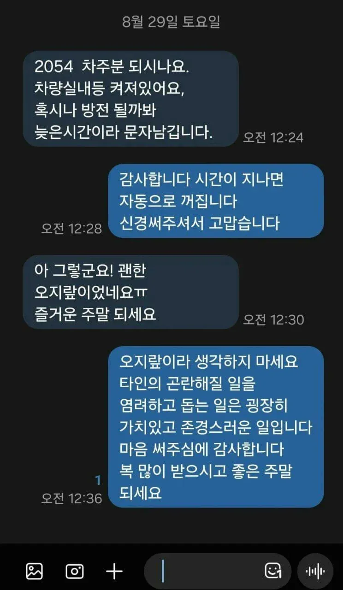

2054 차주분 되시나요.
댓글
훈훈-
알려준사람도 대단하고 차주도 되게 멋진사람이다.

두분다 좋은분들이네요
goat
말 진찌 이쁘게 하네
말 진짜 예쁘다

A: 2054 차주분 맞으시죠
실내등 켜져있어서 방전될까봐 굳이 문자 드리는데 확인 좀 하세요;
B: 네 어차피 시간 지나면 알아서 꺼집니다~
이 시간에 굳이 안 보내셔도 됐는데 신경 안 쓰셔도 돼요
A: 아 ㅋㅋ 걱정해줘도 난리네. 켜져있으니까 말해준 건데 태도 레전드시네요;;
앞으로는 신경 끄겠습니다 수고하세요
B: 자동 Off 기능 있는 차라 괜찮다고 말씀드린 건데 왜 혼자 긁히셔서 급발진이신지...
님이나 밤늦게 문자질 시비 털지 마시고 꿀잠이나 주무세요
A: ㅋㅋㅋ 님 차 오토 off 되는 거 내가 알아야 함?
좋은 마음으로 알려줘도 꼽을 주네 진짜 개지림
그쪽 인성 보니 차 꼴도 알만하네요
B: ㅋㅋㅋㅋㅋ 말하는 꼬라지 봐라. 님 몇 동 몇 호임?
멸망편
네가 쓰면서 즐거웠음 됐다..
ㅋㅋㅋ
너때문에 기분이 잡쳤어
힘내라
이거 내 친구가 당함ㅋㅋㅋㅋ
선의로 문자했더니
"알아서 꺼지는거니까 신경끄세요" 하고 문자옴ㅋㅋㅋㅋ
어 나 이거 본 거 같은데
안읽씹
둘이 섹스해~
말 존나 이쁘게 하네
나도 직장에서 저런 연락받고 되는대로 내차 보러 갔는데 그 사이에 방전됐더라ㅋㅋㅋㅋ

와 나도 저런 상황에선 저렇게 대처할 수 있는 사람이 되어야겠다
저 문장 외우고 싶다
나도 오토라이트란걸 모를때 옆집차 전조등 켜진거보고 얘기해주고 저거랑 똑같은 대답 들은적 있지
근데 12시가 넘었는데도 안꺼진거면 진짜 안꺼진거아님? 언제꺼지는데
ㅋㅋㅋㅋ 와 문자 준 사람 엄청 기분 좋았겠다..
둘이 사귀어라
훈훈하다